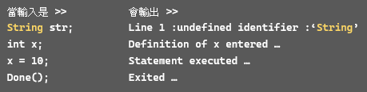

SihiTing
HOME
PROJECTS ▼
機器學習可縮放向量圖形字型生成
基於深度學習的五子棋 AI
農遊規劃網頁
C Interpreter
C Interpreter
簡介
用 C/C++ 依照給定的語法文件，撰寫對應的C語言直譯器。
輸入C語言的程式碼作為input，檢核程式碼是否正確，
支援簡易的C語言功能，包含計算、變數以及函式等。
且可以檢測error型別，回傳對照類別，包含lexical error, syntactical error, semantic error。
實例
▲ 支援簡易的C語言功能，可處理變數宣告以及變數數值改變。

▲ 支援檢測error型別，回報使用者 semantic error。
▲ 支援檢測error型別，回報使用者 syntactical error。